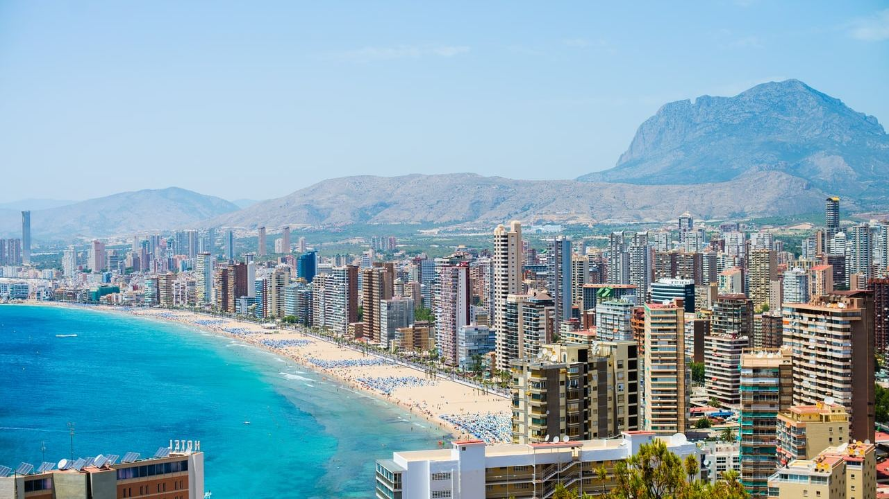
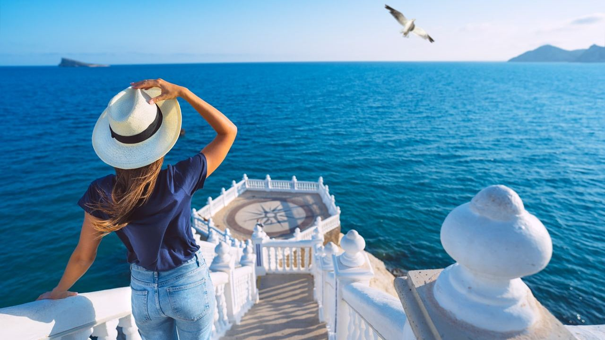
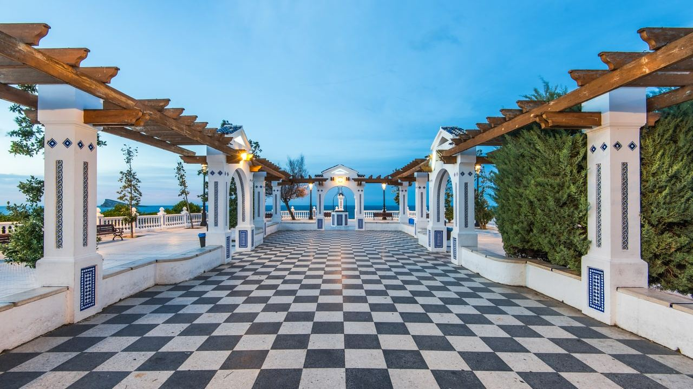
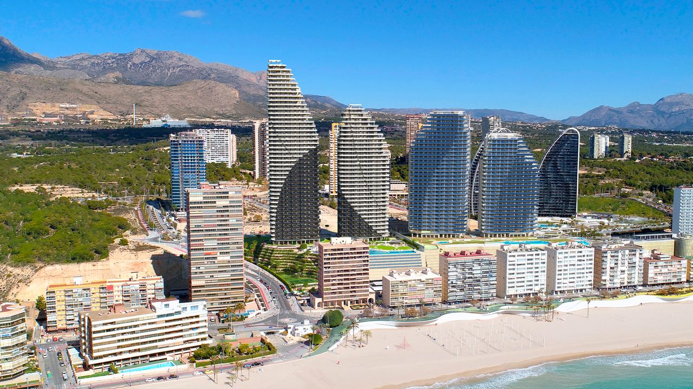
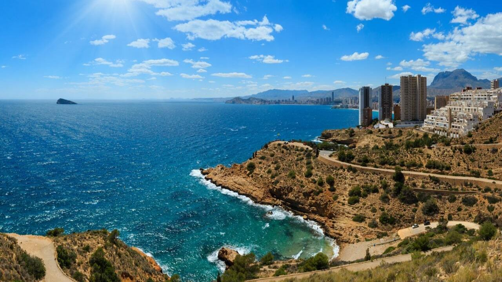

Orte · Costa Blanca
Benidorm: Was gibt es zu sehen? Ein praktischer Ratgeber
 Von Lucyna Gacek · · aktualisiert · 3 Min. Lesezeit
Von Lucyna Gacek · · aktualisiert · 3 Min. Lesezeit

Kurz gesagt: Benidorm ist eine Stadt mit rund 75.000 Einwohnern in der Mitte der Costa Blanca, etwa 55 Minuten vom Flughafen Alicante. Bekannt für seine Skyline, hat es auch eine charmante Altstadt mit dem Aussichtspunkt Balcón del Mediterráneo, zwei lange Strände mit Blauer Flagge (Levante und Poniente), den Naturpark Serra Gelada, Bootsausflüge zur Insel Benidorm, Freizeitparks wie Terra Mítica und Aqualandia und Golfplätze in der Nähe. Dank des milden Winters ist die Stadt das ganze Jahr belebt.
Benidorm wird oft das Manhattan des Mittelmeers genannt und hat eine der höchsten Hochhausdichten pro Einwohner weltweit. Das war Absicht: In den 1950er-Jahren entschied Bürgermeister Pedro Zaragoza, in die Höhe statt in die Breite zu bauen, damit mehr Platz für Strände, Grün und Ausblicke bleibt.
Hinter den Türmen gibt es eine Altstadt, Natur und einige der gepflegtesten Strände Spaniens. Hier die Sehenswürdigkeiten und praktische Tipps.
Die Altstadt

Das alte Fischerdorf liegt auf einer kleinen Landzunge zwischen den beiden Stränden. Die engen Gassen sind voller Tapasbars, Mittelpunkt sind die Plaza de la Señoría und die Kirche San Jaime y Santa Ana mit ihrer blau gefliesten Kuppel. Hier wird die Virgen del Sufragio verehrt, deren Fest im November das größte der Stadt ist.
Der Balcón del Mediterráneo

An der Spitze der Landzunge, wo einst die Burg stand, bietet die weiße Balustrade des Balcón del Mediterráneo den klassischen Blick auf beide Buchten. Am schönsten bei Sonnenuntergang oder früh morgens, wenn es ruhig ist. Treppen führen hinunter zur kleinen Bucht Mal Pas.
Levante, Poniente und die Buchten

- Levante – rund 2 km Sand am belebten Zentrum, mit Bars, Restaurants und Wassersport.
- Poniente – rund 3 km, breiter und ruhiger, mit preisgekrönter Promenade und vielen Einheimischen am Wochenende.
- Mal Pas – kleine, geschützte Bucht unter der Altstadt.
- Tío Ximo und L'Almadrava – kleine Buchten am Fuß der Serra Gelada.
Beide Hauptstrände tragen die Blaue Flagge, sind in der Saison bewacht und werden täglich gereinigt.
Serra Gelada und die Insel Benidorm

Nordöstlich der Stadt hat der Naturpark Serra Gelada über 400 m hohe Klippen und einen Küstenweg zum Wachturm Punta del Cavall und zum Leuchtturm Richtung L'Albir, mit Blick zurück auf die Skyline. Vom Hafen fahren Boote zur Insel Benidorm, einem Meeresschutzgebiet, ideal zum Schnorcheln. Im Hinterland ist der Puig Campana (1.406 m) eine anspruchsvolle Tagestour.
Freizeitparks und Golf
Benidorm hat mehr Freizeitparks als jeder andere Ort in Spanien: Terra Mítica (Fahrgeschäfte zu den antiken Kulturen des Mittelmeers), den Wasserpark Aqualandia, Mundomar mit Meerestieren und den Zoo Terra Natura. Golfer finden mehrere Plätze in etwa 20 Minuten Entfernung, darunter Villaitana in Finestrat und den Platz Puig Campana.
Anreise und Fortbewegung
Der Flughafen Alicante ist rund 60 km entfernt, etwa 55 Minuten über die AP-7. Direkte Busse fahren vom Flughafen, und die TRAM-Linie 1 verbindet Benidorm in rund 1 Stunde 10 Minuten mit dem Zentrum von Alicante; Linie 9 fährt weiter nach Altea, Calpe und Dénia. In der Stadt reichen Busse und Fußwege für fast alles.
Kaufen in und um Benidorm
Käufer wählen zwischen Apartments mit Meerblick in den Türmen von Poniente und Levante, Wohnungen nahe der Altstadt oder mehr Platz in Finestrat und La Nucía, 10–15 Minuten entfernt. Die Vermietungsnachfrage ist das ganze Jahr hoch.
Häufige Fragen
Lohnt sich Benidorm?
Ja. Neben der Skyline gibt es eine hübsche Altstadt, zwei der besten Stadtstrände Spaniens, einen Naturpark mit Küstenwegen und viel für Familien.
Wie weit ist Benidorm vom Flughafen Alicante entfernt?
Etwa 60 km, rund 55 Minuten mit dem Auto. Direkte Busse brauchen etwa eine Stunde.
Welcher Strand ist besser, Levante oder Poniente?
Levante ist lebhafter und näher an Bars und Altstadt. Poniente ist breiter, ruhiger und bei Familien und Einheimischen beliebt.
Ist in Benidorm im Winter viel los?
Ja. Es ist einer der wenigen spanischen Ferienorte, die das ganze Jahr belebt sind, dank mildem Winter und vielen Langzeitgästen.
Mehr als ein Ferienort
Mit ganzjährigem Service, guten Verbindungen und großer internationaler Gemeinschaft lebt es sich in Benidorm und Umgebung unkompliziert. Schreiben Sie uns, und wir helfen Ihnen, die Möglichkeiten zu vergleichen.
Quellen: Visit Benidorm – official tourism · Generalitat Valenciana – Parc Natural de la Serra Gelada · TRAM d'Alacant